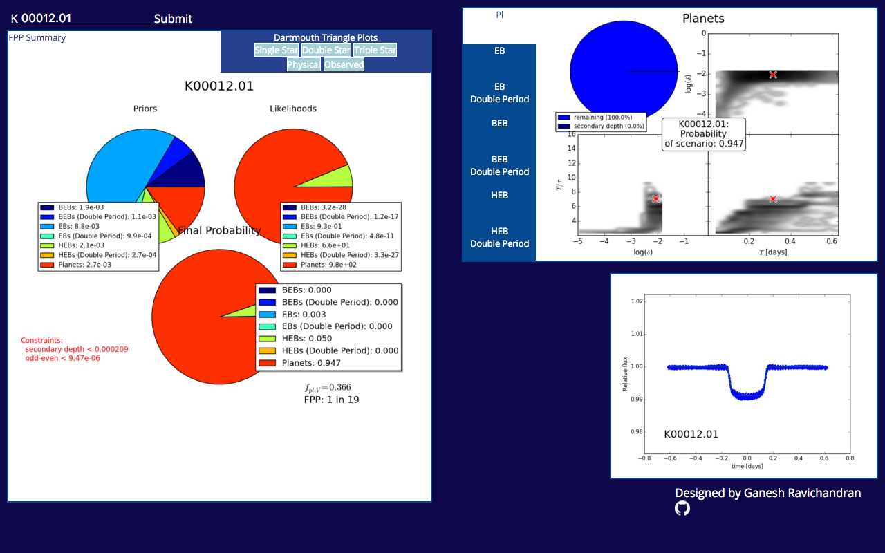
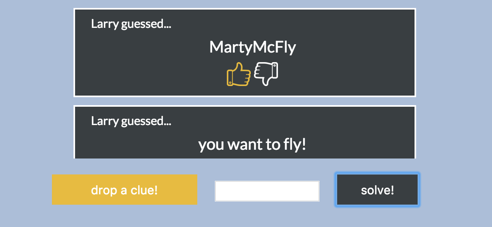

Ganesh Ravichandran
coder • explorer • aspiring astronaut


Arrow
Kepler Web App

Trace

LexicalPT
Mr. Mime
Robo-AO GUI
Do you ever go to a concert with your friends, just to lose them in the crowd? Arrow is a mobile app designed to allow users to find each other by pointing an arrow in the direction of other users in their network. The closer you get to another user, the redder the arrow becomes!
Arrow also includes a built-in subway feature that directs users to the nearest subway station. Instead of relying on street maps (which are especially complicating for tourists), the user simply walks in the direction of the arrow until they reach the station.
Currently being built for iOS and Android using React Native.
See the code!
Arrow also includes a built-in subway feature that directs users to the nearest subway station. Instead of relying on street maps (which are especially complicating for tourists), the user simply walks in the direction of the arrow until they reach the station.
Currently being built for iOS and Android using React Native.
See the code!
Close
The Kepler Web App is an easy-to-use UI for viewing data from False Positive Probability analyses of Kepler Objects of Interest. Kepler is a NASA mission that has found more than 4000 planetary candidates outside of the Milky Way, but the process of validating these candidates (i.e. distinguishing between actual planets and false positives) is time-consuming and computaitonally expensive. Dr. Tim Morton at Princeton has developed a probabilistic method of validating Kepler Objects of Interest, and this UI displays this data.
Built using Flask, jQuery, and vanilla JS.
Built using Flask, jQuery, and vanilla JS.
Close
Trace is a web app that allows users to play a guessing game against each other. One user poses a question and a hint, while the other users guess the answer using text, GIFs, and music.
I worked on this project in conjunction with my development group, 3005Hacks.
Built using Node.js, socket.IO, jQuery, and vanilla JS.
I worked on this project in conjunction with my development group, 3005Hacks.
Built using Node.js, socket.IO, jQuery, and vanilla JS.
Close
LexicalPT is a convenient way for physical therapy patients to submit their therapy data online with a perfectly-engineered form designed to make the process as painless as possible.
I worked on this project in conjunction with Diagraphic Technologies.
Built using Node.js, socket.IO, dynamoDB, jQuery, and vanilla JS.
I worked on this project in conjunction with Diagraphic Technologies.
Built using Node.js, socket.IO, dynamoDB, jQuery, and vanilla JS.
Close
Mr. Mime is an Arduino-based robot that creates long-exposure images by controlling the motion of a pixel stick. Images are uplodaded to the Arduino using a well-engineered UI that allows users to drag and edit images in the browser.
I am working on this project as part of ADI Labs, a student-run collaboration that aims to provide mentorship on a diverse set of open-source programming projects and provide personalized mentorship on working in the tech industry.
Built using Flask, jQuery, packery.js, draggabilly.js, and vanilla JS.
I am working on this project as part of ADI Labs, a student-run collaboration that aims to provide mentorship on a diverse set of open-source programming projects and provide personalized mentorship on working in the tech industry.
Built using Flask, jQuery, packery.js, draggabilly.js, and vanilla JS.
Close
The Robotic Adaptive Optics system is a laser adaptive optics instrument operating at Palomar Observatory in California. Designed by a team of scientists and engineers at Caltech and the Inter-University Centre for Astronomy and Astrophysics, Robo-AO takes images of stars suspected of harboring exoplanets. I designed an easy-to-use GUI to run through Robo-AO images and catalog star coordinates.
Built using wxPython, numPy, sciPy, and matplotlib.
Built using wxPython, numPy, sciPy, and matplotlib.
Close